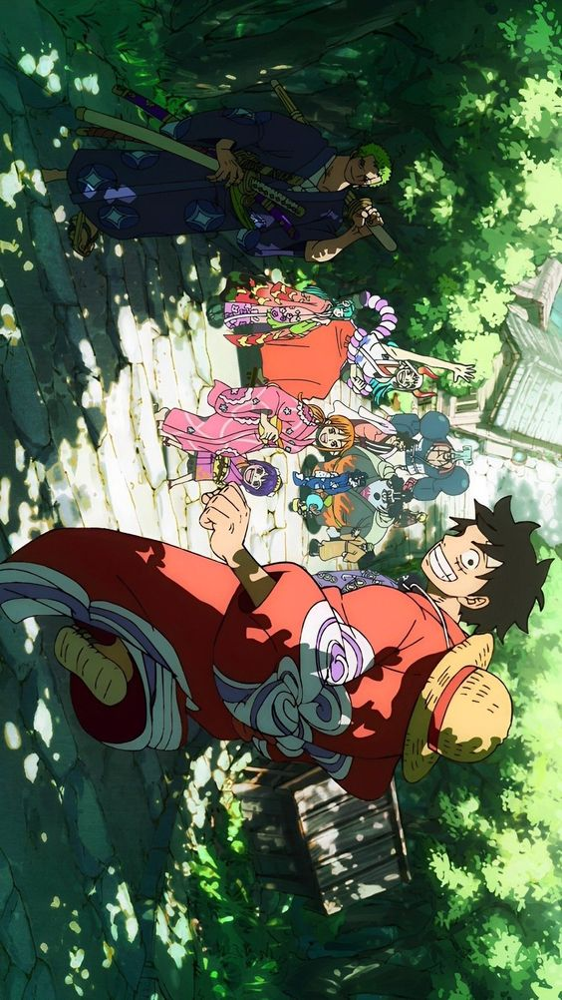
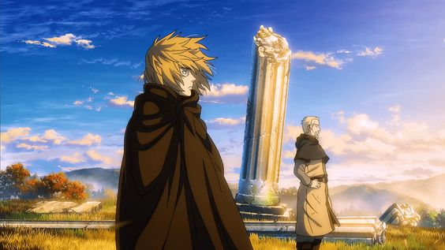
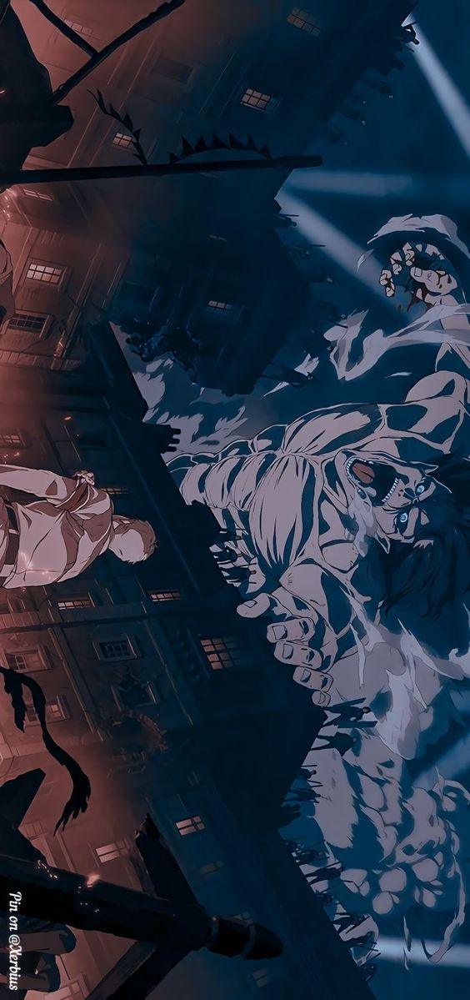

ONE PIECE
La legendaria búsqueda de Luffy por convertirse en el Rey de los Piratas sigue manteniendo su calidad a pesar de sus más de 1000 episodios.

VINLAND SAGA
Una historia vikinga con acción y profundidad emocional. Un anime histórico impresionante y maduro.

ATTACK ON TITAN: THE FINAL SEASON
Una épica conclusión a la historia de titanes y humanidad. La cuarta temporada lleva la acción y la emoción a nuevos niveles.